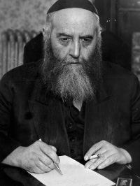

The Rebbe Lives Now Too

At the end of Cheshvan 5705/1944 the Rebbe Rayatz fell sick and he was unwell for about three weeks. Boruch Hashem, by Yud-Tes Kislev his condition improved and he began writing letters.
Rabbi Shmuel Levitin related that a few days before the Rebbe became sick, one of the daughters went in and asked him: What can we do spiritually so the Rebbe will recover?
He answered: I don’t know.
She asked again: Would it be worthwhile for each one to bequeath some of his own years to the Rebbe?
He said: That [needs to be done] in thought.
THE RESHIMA WAS FOUND
Rashag related:
A few days after the Rebbe Rayatz fell sick, the secretary R’ Chaim Lieberman found a reshima (notes) from the year 5681, when the Rebbe had been sick with typhus. In this reshima there are signatures of Anash, the T’mimim and Chassidim that they give years of their lives to the Rebbe.
THE REBBE WANTS TO SEE THE PEOPLE
On Thursday, 5 Teves 5705, the doctors said that the Rebbe’s condition had improved and he could receive a few of the people closest to him. They said this was on condition that he did not talk at all; only they would speak. And he should be careful not to get excited.
On Tuesday, Motzaei the Tenth of Teves (the eve of the 11th) the elder rabbanim and distinguished Anash entered the Rebbe’s room because the Rebbe said he wanted to see the people. This was a happy day for the Chassidim and Anash.
The ones who entered were R’ Shmuel Levitin, R’ Eliyahu (Yochil) Simpson, R’ Yisroel Jacobson, R’ Berel Chaskind, R’ Yochanan Gordon, R’ Shmuel Zalmanov, R’ Shlomo Aharon Kazarnovsky, R’ Moshe Dovber Rivkin, and R’ Shneur Zalman Gurary.
When they walked in, R’ Levitin emotionally recited the SheHechiyanu blessing.
THE KIDNEY STONES DISAPPEARED
R’ Shneur Zalman Gurary was sick at the time and suffered greatly from kidney stones. The doctor said he needed an operation on one of his kidneys and the Rebbe Rayatz asked him: How are you?
He did not know what to say (because they had been warned not to allow the Rebbe to speak) and he said: We agreed not to speak (because of the Rebbe’s weakness).
The Rebbe said: But I’m asking.
R’ Gurary had no choice and he told the Rebbe about his health and that the doctor said he needed surgery.
The Rebbe said: Tell the doctor that an operation is unnecessary. Drink a cup of milk every day (not strong), and sometimes you can have a piece of herring, but not the way the herring is eaten, and you will be fine!
Afterwards, R’ Gurary went to the doctor who examined him and said he did not see any kidney stones.
AN ANSWER AND NICE BRACHA FROM THE REBBE
Rabbi Yisroel Gustman (who was the Rosh Yeshiva in Tomchei T’mimim – 770 at that time) wrote a pan to the Rebbe Rayatz and a letter wishing him that he recover. After the Rebbe’s condition improved, he wrote a response to R’ Gustman with a very nice bracha.
Many people wrote brachos and pidyonos like this to the Rebbe and did not receive a response, but he received an especially nice answer.
GOOD NEWS THAT MADE THE REBBE HAPPY
In Shvat 5705/1945 R’ Shlomo Zalman Hecht had yechidus. Before he had yechidus he was very nervous but when he came out he was very happy. He said that the Rebbe told him: The doctors told me that my cure is in minimizing speech and in hearing good news.
The Rebbe asked him about the wedding of his brother, R’ Yaakov Yehuda (J.J.) which took place on 15 Shvat. He told the Rebbe about the wedding and saw that this gave the Rebbe much joy. The Rebbe raised his hands high and said: Praised be G-d.
THE REBBE RASHAB NULLIFIED THEM WITH THE LIGHT OF HIS TRUTH
During that yechidus the Rebbe told R’ Hecht: The Rebbe Rashab was in Moscow and from there he went to a meeting in Petersburg. About seventy heretics participated in this meeting and the Rebbe, my father, nullified them all with the light of his truth.
THE REBBE’S WORDS SAWED THROUGH MY HEART
A lawyer participated at this meeting who had received authorization from the government to attend, and he came with the proposal of doing away entirely with gittin (Jewish divorces) and chalitza and to conduct mixed marriages.
The Rebbe, my father, said: Where does a Jew from birth get the chutzpa to talk like this?
Hearing this, the lawyer burst into tears and admitted that on the previous Yom Kippur he had eaten ham.
The Rabbiner Maza (R’ Yaakov Maza who was a government appointed rabbi) was present at the meeting, and he was very impressed by the lawyer’s repentance.
Some time later, R’ Menachem Mendel Chein met this lawyer and asked him what brought him back to the proper path. The lawyer said: The Lubavitcher Rebbe! His words sawed through my heart. I saw a Jew sitting there who spoke the truth.
THE REBBE LIVES TODAY TOO
The Rebbe Rayatz concluded:
The Rebbe [Rashab] lives now too! Where Chassidim live, that’s where the Rebbe is, but there must be commitment and devotion, and the rest he will already take care of.
THE HEALING OF THE REBBE’S FEET DEPENDS ON THE CHASSIDIM!
At one of the farbrengens after the Rebbe Rayatz became sick, they said that when he had problems with his feet (while he was in Poland) and it was hard for him to walk, R’ Chatshe Feigin once spoke about this and said:
Why does the Rebbe have a problem with his feet? Because the brain is fine and the heart is fine too (as far as the Rebbe himself) and it’s only the feet, which are associated with the Chassidim, where there is a problem. So the healing of the feet depends on the Chassidim!
Weingarten. "The Rebbe Lives Now Too." Beis Moshiach, no. 776 (February 10, 2011).